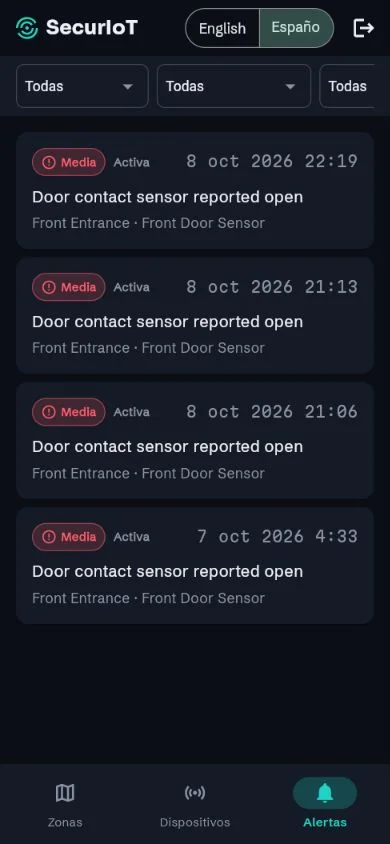
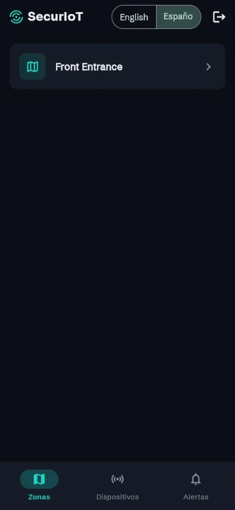
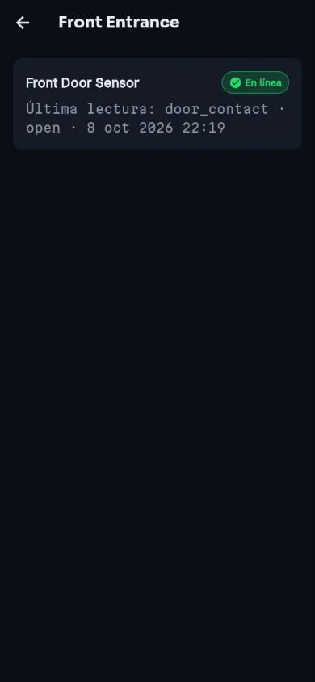
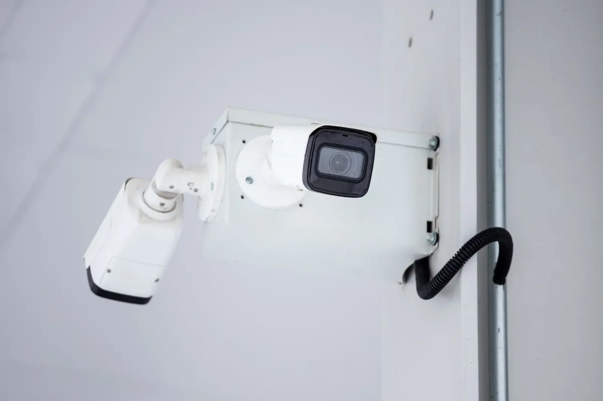
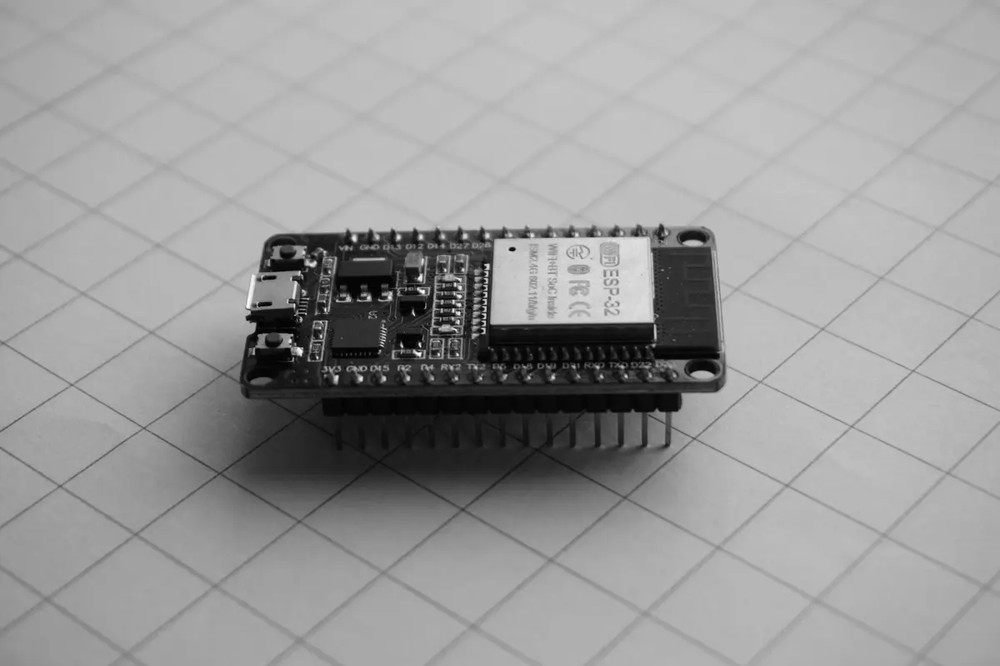

Administrador de seguridad
Visibilidad centralizada del estado de zonas, dispositivos y alertas de todas las sedes desde un solo panel, sin depender solo de rondas físicas.
SecurIoT detecta personas en accesos y zonas restringidas, valida si están autorizadas y activa la respuesta en el mismo instante, no al día siguiente cuando alguien revisa la grabación.
Piloto de 30 días. Sin central de monitoreo 24/7 ni respuesta armada.

Vista ilustrativa de un perímetro bajo monitoreo SecurIoT
Guardias humanos y cámaras que solo se revisan después del hecho. El intruso ya salió de la instalación para cuando alguien vuelve a ver la grabación.
Sensores y cámara en el perímetro, procesamiento en el borde y una nube centralizada que valida accesos y activa la respuesta sin esperar revisión humana.
La cámara identifica personas y objetos en el perímetro, con seguimiento pan-tilt del punto de interés.
El Edge API procesa localmente y valida en tiempo real si el ingreso está autorizado para esa zona.
Ante una intrusión detectada: alarma local, notificación inmediata al personal de seguridad y a los responsables designados por la empresa, sin esperar revisión manual.
Cada evento queda trazable en un historial auditable, listo para investigación interna o reporte a autoridades y aseguradoras.
La cámara y los sensores vigilan accesos y zonas restringidas sin depender de una ronda.
Cuando el motor de reglas detecta una intrusión, avisa al personal de seguridad y a los responsables que designes.
Mira el estado de zonas, dispositivos y alertas desde el panel web, de todas tus sedes.
Con los planes Standard y Plus, el equipo de Centinela Labs instala la cámara y la unidad local en tu sitio.
Soporte telefónico desde Standard y una línea de soporte nocturna en Plus.
Cada evento queda registrado con zona, dispositivo y hora, listo para una investigación o un reporte.
El dashboard Web centraliza zonas, dispositivos y alertas de cada planta o almacén. La aplicación móvil acompaña al personal de vigilancia en ronda con las mismas zonas, dispositivos y alertas.


Capturas reales de la aplicación móvil de SecurIoT, con datos de demostración y sin personas en pantalla.
Una cámara, sensores y un microcontrolador ESP32 en el perímetro. Una unidad local procesa en el borde, así que la detección no espera a la nube.
Las fotos de esta sección son imágenes de referencia de bancos libres. No muestran el prototipo de SecurIoT.


La unidad local procesa la imagen en tu instalación. La nube centraliza la gestión, no la grabación.
El reconocimiento de personal autorizado exige consentimiento por escrito de cada persona.
Firmamos un acuerdo de tratamiento de datos que define el plazo de retención, en línea con la Ley N.° 29733.
Visibilidad centralizada del estado de zonas, dispositivos y alertas de todas las sedes desde un solo panel, sin depender solo de rondas físicas.
Evidencia trazable y auditable de cada incidente para reducir exposición legal y agilizar el reporte a aseguradoras, con un modelo de suscripción por sede pensado para el presupuesto de una mediana empresa, no el de una gran corporación.
Pagas una suscripción mensual por cada cámara y una instalación única. Todos los precios están en soles (PEN).
S/ 39 por cámara al mes
Recomendado
S/ 49 por cámara al mes
S/ 69 por cámara al mes
Instalación única S/ 350 por cámara en cualquier plan. Se devuelve si cancelas durante el piloto de 30 días.
Descripción general de categorías típicas de seguridad, no de empresas concretas. Cada opción resuelve algo distinto.
| Criterio | Solo guardias | Cámara propia | Empresa de monitoreo | SecurIoT |
|---|---|---|---|---|
| Reacciona mientras ocurre | Depende de la ronda | Suele grabar y avisar movimiento | Sí, con operadores | SecurIoTSí, con reglas automáticas |
| Valida si el acceso está autorizado | Si el guardia conoce a la persona | Suele no validar | Según el contrato | SecurIoTSí, en el borde, por zona |
| Historial auditable | Libro de ocurrencias | Grabaciones sueltas | Reportes del proveedor | SecurIoTRegistro por evento |
| Respuesta humana 24/7 | Según los turnos | No | Sí | SecurIoTNo. Tu equipo recibe la alerta |
SecurIoT notifica al personal de seguridad y a los responsables que tu empresa designa. No incluimos central de monitoreo 24/7 ni respuesta armada. El plan Plus suma una línea de soporte nocturna para dudas técnicas.
Sin internet, la unidad local sigue detectando y activa la sirena. Las notificaciones al celular necesitan conexión. La unidad necesita energía eléctrica: pregunta al equipo por las opciones de respaldo durante el piloto.
Tratamos las imágenes y los datos biométricos conforme a la Ley N.° 29733. El reconocimiento de personas exige consentimiento por escrito y firmamos un acuerdo de datos que define la retención. No declaramos certificaciones que todavía no tenemos.
Pueden ocurrir. El motor de alertas funciona por reglas que se ajustan por zona, y el piloto de 30 días sirve para afinarlas antes de comprometerte.
Sí. Si cancelas durante el piloto de 30 días, te devolvemos los S/ 350 de instalación por cámara.
No. El pago en la aplicación web es una simulación para un proyecto de curso.
SecurIoT es el producto de Centinela Labs, desarrollado como proyecto final del curso Desarrollo de Soluciones IoT en la Universidad Peruana de Ciencias Aplicadas (UPC). El foco inicial es la mediana empresa industrial y logística de Lima Metropolitana.